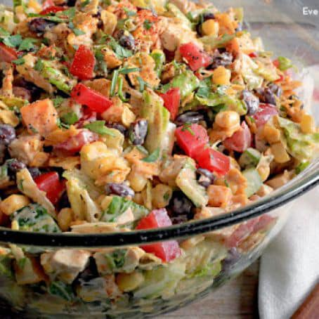

Tex-Mex Chopped Chicken Salad!

Great summer and warm weather salad with a southwest vibe
Ingredients
Dressing:
- 1 cup ranch dressing
- 2 tablespoons taco seasoning (hot or mild)
Salad
- 3 cups cooked chicken, cooled and diced
- 4 cups romaine lettuce, chopped (about 1 head)
- Roma tomatoes, diced
- 1 cucumber, seeded and diced
- 1 cup corn kernels (fresh or frozen)
- 4 to 5 green onions, sliced
- 1 (15-ounce) can black beans, drained and rinsed
- 4 ounces sharp cheddar or pepper jack cheese, cut into 1/4-inch cubes
- 1/4 cup cilantro, chopped
- Juice of 1/2 lime
- 1 cup tortilla chips, crushed
Optional Garnishes:
- Diced jalopeño
- Toasted pumpkin seeds
- Diced avocado or jicama
Steps:
- In a small bowl, mix the dressing ingredients together and then refrigerate until ready for use.
- In a large bowl, toss the salad ingredients together.
- Add a little dressing at a time and then toss until lightly coated. Season with salt and pepper to taste. Serve immediately.